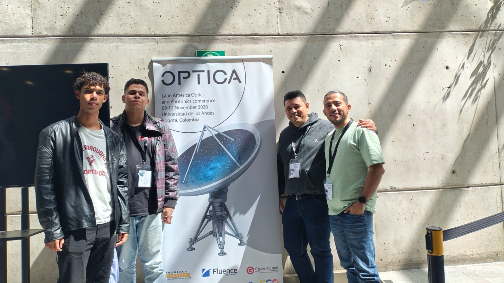

Internacional
La Conferencia Latinoamericana de Óptica y Fotónica Optica (LAOP)
Investigador: PhD. Fabio Vega, PhD. Juan M. Vilardy, Estudiante Andres Martinez
Trabajos presentados
Chromatic Strategy Assessment for Improved Simultaneous Camera–Projector Calibration in 3D Structured-Light Systems.
ESP32-S3-Based Optical Reflectance Spectrometry for Gold Detection.
Integrated Software Framework for 3D Reconstruction Using Fringe Projection Profilometry.
📍 Bogota,Colombia
📅 09 al 12 de Noviembre de 2026